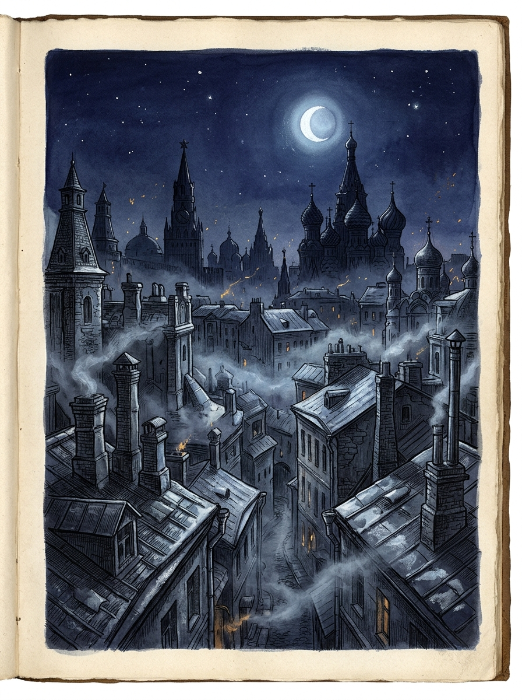
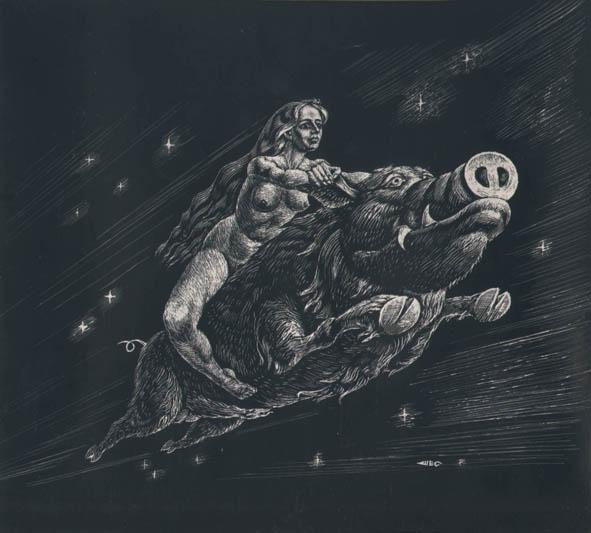

Полет
Над арбатскими переулками, погром в квартире критика Латунского и лесное озеро

Краткое содержание главы
Невидимая и свободная! Невидимая и свободная! Прокричав эти слова над переулками Арбата, Маргарита пронеслась вдоль трамвайных проводов, мимо золотых куполов и спящих кварталов. Ветер рассыпал ее волосы, сердце пело от упоительной легкости: впервые за долгие месяцы отчаяния в ней не осталось ни капли страха.
Пролетая мимо сверкающего восьмиэтажного Дома Драмлита — нового рая для угодливых литераторов, — она увидела на табличке ненавистную фамилию Латунского, критика, погубившего роман Мастера. Влетев в распахнутое окно пустой квартиры, Маргарита обрушила на пианино, хрустальные люстры и ванную комнату праведный гнев, разнеся всю показную роскошь вдребезги, но мгновенно остыла, когда в соседней комнате испугался проснувшийся ребенок — и ласково успокоила малыша сказкой.
Затем полет вынес ее далеко за пределы Москвы, к серебристым лунным рекам, лесным оврагам и поляне с призрачным балом русалок, где на боров превращенном в животное соседе Николае Ивановиче к ней прилетела ее верная Наташа. Окунувшись в прохладную речную воду, Маргарита вернулась в столицу — в машине, управляемой темным грачом, — прямо к подъезду дома № 302-бис.
Невидима и свободна! Невидима и свободна! Пролетев по своему переулку, Маргарита попала в другой, пересекавший первый под прямым углом. Этот заплатанный, заштопанный, кривой и длинный переулок с покосившейся дверью нефтелавки, где кружками продают керосин и жидкость от паразитов во флаконах, она перерезала в одно мгновение и тут усвоила, что, даже будучи совершенно свободной и невидимой, все же и в наслаждении нужно быть хоть немного благоразумной. Только каким-то чудом затормозившись, она не разбилась насмерть о старый покосившийся фонарь на углу. Увернувшись от него, Маргарита покрепче сжала щетку и полетела помедленнее, вглядываясь в электрические провода и вывески, висящие поперек тротуара.
Третий переулок вел прямо к Арбату. Здесь Маргарита совершенно освоилась с управлением щеткой, поняла, что та слушается малейшего прикосновения рук или ног и что, летя над городом, нужно быть очень внимательной и не очень буйствовать. Кроме того, совершенно ясно стало уже в переулке, что прохожие летунью не видят. Никто не задирал головы, не кричал «Гляди, гляди!», не шарахался в сторону, не визжал и не падал в обморок, диким смехом не хохотал.
Маргарита летела беззвучно, очень медленно и невысоко, примерно на уровне второго этажа. Но и при медленном лете, у самого выхода на ослепительно освещенный Арбат, она немного промахнулась и плечом ударилась о какой-то освещенный диск, на котором была нарисована стрела. Это рассердило Маргариту. Она осадила послушную щетку, отлетела в сторону, а потом, бросившись на диск внезапно, концом щетки разбила его вдребезги. Посыпались с грохотом осколки, прохожие шарахнулись, где-то засвистели, а Маргарита, совершив этот ненужный поступок, расхохоталась. «На Арбате надо быть еще поосторожнее, – подумала Маргарита, – тут столько напутано всего, что и не разберешься». Она принялась нырять между проводами. Под Маргаритой плыли крыши троллейбусов, автобусов и легковых машин, а по тротуарам, как казалось сверху Маргарите, плыли реки кепок. От этих рек отделялись ручейки и вливались в огненные пасти ночных магазинов. «Э, какое месиво! – сердито подумала Маргарита, – тут повернуться нельзя». Она пересекла Арбат, поднялась повыше, к четвертым этажам, и мимо ослепительно сияющих трубок на угловом здании театра проплыла в узкий переулок с высокими домами. Все окна были открыты, и всюду слышалась в окнах радиомузыка. Из любопытства Маргарита заглянула в одно из них. Увидела кухню. Два примуса ревели на плите, возле них стояли две женщины с ложками в руках и переругивались.
– Свет надо тушить за собой в уборной, вот что я вам скажу, Пелагея Петровна, – говорила та женщина, перед которой была кастрюля с какой-то снедью, от которой валил пар, – а то мы на выселение на вас подадим!
– Сами вы хороши, – отвечала другая.
– Обе вы хороши, – звучно сказала Маргарита, переваливаясь через подоконник в кухню. Обе ссорящиеся повернулись на голос и замерли с грязными ложками в руках. Маргарита осторожно протянула руку между ними, повернула краны в обоих примусах и потушила их. Женщины охнули и открыли рты. Но Маргарита уже соскучилась в кухне и вылетела в переулок.
В конце его ее внимание привлекла роскошная громада восьмиэтажного, видимо, только что построенного дома. Маргарита пошла вниз и, приземлившись, увидела, что фасад дома выложен черным мрамором, что двери широкие, что за стеклом их виднеется фуражка с золотым галуном и пуговицы швейцара и что над дверьми золотом выведена надпись: «Дом Драмлита».
Маргарита щурилась на надпись, соображая, что бы могло означать слово «Драмлит». Взяв щетку под мышку, Маргарита вошла в подъезд, толкнув дверью удивленного швейцара, и увидела рядом с лифтом на стене черную громадную доску, а на ней выписанные белыми буквами номера квартир и фамилии жильцов. Венчающая список надпись «Дом драматурга и литератора» заставила Маргариту испустить хищный задушенный вопль. Поднявшись в воздух повыше, она жадно начала читать фамилии: Хустов, Двубратский, Квант, Бескудников, Латунский...
– Латунский! – завизжала Маргарита. – Латунский! Да ведь это же он! Это он погубил мастера.
Швейцар у дверей, выкатив глаза и даже подпрыгивая от удивления, глядел на черную доску, стараясь понять такое чудо: почему это завизжал внезапно список жильцов. А Маргарита в это время уже поднималась стремительно вверх по лестнице, повторяя в каком-то упоении:
– Латунский – восемьдесят четыре! Латунский – восемьдесят четыре...
Вот налево – 82, направо – 83, еще выше, налево – 84. Вот и карточка – «О. Латунский».
Маргарита соскочила со щетки, и разгоряченные ее подошвы приятно охладила каменная площадка. Маргарита позвонила раз, другой. Но никто не открывал. Маргарита стала сильнее жать кнопку и сама слышала трезвон, который поднялся в квартире Латунского. Да, по гроб жизни должен быть благодарен покойному Берлиозу обитатель квартиры N 84 в восьмом этаже за то, что председатель МАССОЛИТа попал под трамвай, и за то, что траурное заседание назначили как раз на этот вечер. Под счастливой звездой родился критик Латунский. Она спасла его от встречи с Маргаритой, ставшей ведьмой в эту пятницу!
Никто не открывал. Тогда во весь мах Маргарита понеслась вниз, отсчитывая этажи, долетела донизу, вырвалась на улицу и, глядя вверх, отсчитала и проверила этажи снаружи, соображая, какие именно окна квартиры Латунского. Несомненно, что это были пять темных окон на углу здания, в восьмом этаже. Уверившись в этом, Маргарита поднялась в воздухе и через несколько секунд сквозь открытое окно входила в неосвещенную комнату, в которой серебрилась только узенькая дорожка от луны. По ней пробежала Маргарита, нашарила выключатель. Через минуту вся квартира была освещена. Щетка стояла в углу. Удостоверившись, что дома никого нету, Маргарита открыла дверь на лестницу и проверила, тут ли карточка. Карточка была на месте, Маргарита попала туда, куда нужно было.
Да, говорят, что и до сих пор критик Латунский бледнеет, вспоминая этот страшный вечер, и до сих пор с благоговением произносит имя Берлиоза. Совершенно неизвестно, какою темной и гнусной уголовщиной ознаменовался бы этот вечер, – по возвращении из кухни Маргариты в руках у нее оказался тяжелый молоток.
Нагая и невидимая летунья сдерживала и уговаривала себя, руки ее тряслись от нетерпения. Внимательно прицелившись, Маргарита ударила по клавишам рояля, и по всей квартире пронесся первый жалобный вой. Исступленно кричал ни в чем не повинный беккеровский кабинетный инструмент. Клавиши на нем провалились, костяные накладки летели во все стороны. Со звуком револьверного выстрела лопнула под ударом молотка верхняя полированная дека. Тяжело дыша, Маргарита рвала и мяла молотком струны. Наконец, уставши, отвалилась, бухнулась в кресло, чтобы отдышаться.
В ванной страшно гудела вода и в кухне тоже. «Кажется, уже полилось на пол», – подумала Маргарита и добавила вслух:
– Однако рассиживаться нечего.
Из кухни в коридор уже бежал поток. Шлепая босыми ногами в воде, Маргарита ведрами носила из кухни воду в кабинет критика и выливала ее в ящики письменного стола. Потом, разломав молотком двери шкафа в этом же кабинете, бросилась в спальню. Разбив зеркальный шкаф, она вытащила из него костюм критика и утопила его в ванне. Полную чернильницу чернил, захваченную в кабинете, она вылила в пышно взбитую двуспальную кровать в спальне. Разрушение, которое она производила, доставляло ей жгучее наслаждение, но при этом ей все время казалось, что результаты получаются какие-то мизерные. Поэтому она стала делать что попало. Она била вазоны с фикусами в той комнате, где был рояль. Не докончив этого, возвращалась в спальню и кухонным ножом резала простыни, била застекленные фотографии. Усталости она не чувствовала, и только пот тек по ней ручьями.
В это время в квартире N 82, под квартирой Латунского, домработница драматурга Кванта пила чай в кухне, недоумевая по поводу того, что сверху доносится какой-то грохот, беготня и звон. Подняв голову к потолку, она вдруг увидела, что он на глазах у нее меняет свой белый цвет на какой-то мертвенно-синеватый. Пятно расширялось на глазах, и вдруг на нем набухли капли. Минуты две сидела домработница, дивясь такому явлению, пока, наконец, из потолка не пошел настоящий дождь и не застучал по полу. Тут она вскочила, подставила под струи таз, что нисколько не помогло, так как дождь расширился и стал заливать и газовую плиту, и стол с посудой. Тогда, вскрикнув, домработница Кванта побежала из квартиры на лестницу, и тотчас же в квартире Латунского начались звонки.
– Ну, зазвонили, пора собираться, – сказала Маргарита. Она села на щетку, прислушиваясь к тому, как женский голос кричит в скважину двери:
– Откройте, откройте! Дуся, открой! У вас, что ли, вода течет? Нас залило.
Маргарита поднялась на метр вверх и ударила по люстре. Две лампочки разорвало, и во все стороны полетели подвески. Крики в скважине прекратились, на лестнице послышался топот. Маргарита выплыла в окно, оказалась снаружи окна, размахнулась несильно и молотком ударила в стекло. Оно всхлипнуло, и по облицованной мрамором стене каскадом побежали вниз осколки. Маргарита поехала к следующему окну. Далеко внизу забегали люди по тротуару, из двух стоявших у подъезда машин одна загудела и отъехала. Покончив с окнами Латунского, Маргарита поплыла к соседней квартире. Удары стали чаще, переулок наполнился звоном и грохотом. Из первого подъезда выбежал швейцар, поглядел вверх, немного поколебался, очевидно, не сообразив сразу, что ему предпринять, всунул в рот свисток и бешено засвистел. С особым азартом под этот свист рассадив последнее окно на восьмом этаже, Маргарита спустилась к седьмому и начала крушить стекла в нем.
Измученный долгим бездельем за зеркальными дверями подъезда, швейцар вкладывал в свист всю душу, причем точно следовал за Маргаритой, как бы аккомпанируя ей. В паузах, когда она перелетала от окна к окну, он набирал духу, а при каждом ударе Маргариты, надув щеки, заливался, буравя ночной воздух до самого неба.
Его усилия, в соединении с усилиями разъяренной Маргариты, дали большие результаты. В доме шла паника. Целые еще стекла распахивались, в них появлялись головы людей и тотчас же прятались, открытые же окна, наоборот, закрывались. В противоположных домах в окнах на освещенном фоне возникали темные силуэты людей, старавшихся понять, почему без всякой причины лопаются стекла в новом здании Драмлита.
В переулке народ бежал к дому Драмлита, а внутри его по всем лестницам топали мечущиеся без всякого толка и смысла люди. Домработница Кванта кричала бегущим по лестнице, что их залило, а к ней вскоре присоединилась домработница Хустова из квартиры N 80, помещавшейся под квартирой Кванта. У Хустовых хлынуло с потолка и в кухне, и в уборной. Наконец, у Квантов в кухне обрушился громадный пласт штукатурки с потолка, разбив всю грязную посуду, после чего пошел уже настоящий ливень: из клеток обвисшей мокрой драни хлынуло как из ведра. Тогда на лестнице первого подъезда начались крики. Пролетая мимо предпоследнего окна четвертого этажа, Маргарита заглянула в него и увидела человека, в панике напялившего на себя противогаз. Ударив молотком в его стекло, Маргарита вспугнула его, и он исчез из комнаты.
И неожиданно дикий разгром прекратился. Скользнув к третьему этажу, Маргарита заглянула в крайнее окно, завешенное легонькой темной шторкой. В комнате горела слабенькая лампочка под колпачком. В маленькой кровати с сеточными боками сидел мальчик лет четырех и испуганно прислушивался. Взрослых никого не было в комнате. Очевидно, все выбежали из квартиры.
– Стекла бьют, – проговорил мальчик и позвал: – Мама!
Никто не отозвался, и тогда он сказал:
– Мама, я боюсь.
Маргарита откинула шторку и влетела в окно.
– Я боюсь, – повторил мальчик и задрожал.
– Не бойся, не бойся, маленький, – сказала Маргарита, стараясь смягчить свой осипший на ветру, преступный голос, – это мальчишки стекла били.
– Из рогатки? – спросил мальчик, переставая дрожать.
– Из рогатки, из рогатки, – подтвердила Маргарита, – а ты спи!
– Это Ситник, – сказал мальчик, – у него есть рогатка.
– Ну, конечно, он!
Мальчик поглядел лукаво куда-то в сторону и спросил:
– А ты где, тетя?
– А меня нету, – сказала Маргарита, – я тебе снюсь.
– Я так и думал, – сказал мальчик.
– Ты ложись, – приказала Маргарита, – подложи руку под щеку, а я тебе буду сниться.
– Ну, снись, снись, – согласился мальчик и тотчас улегся и руку положил под щеку.
– Я тебе сказку расскажу, – заговорила Маргарита и положила разгоряченную руку на стриженную голову, – была на свете одна тетя. И у нее не было детей, и счастья вообще тоже не было. И вот она сперва много плакала, а потом стала злая... – Маргарита умолкла, сняла руку – мальчик спал.
Маргарита тихонько положила молоток на подоконник и вылетела из окна. Возле дома была кутерьма. По асфальтированному тротуару, усеянному битым стеклом, бегали и что-то выкрикивали люди. Между ними уже мелькали милиционеры. Внезапно ударил колокол, и с Арбата в переулок вкатила красная пожарная машина с лестницей...
Но дальнейшее уже не интересовало Маргариту. Прицелившись, чтобы не задеть за какой-нибудь провод, она покрепче сжала щетку и в мгновение оказалась выше злополучного дома. Переулок под нею покосился набок и провалился вниз. Вместо него одного под ногами у Маргариты возникло скопище крыш, под углами перерезанное сверкающими дорожками. Все оно неожиданно поехало в сторону, и цепочки огней смазались и слились.
Маргарита сделала еще один рывок, и тогда все скопище крыш провалилось под землю, а вместо него появилось внизу озеро дрожащих электрических огней, и это озеро внезапно поднялось вертикально, а затем появилось над головой у Маргариты, а под ногами блеснула луна. Поняв, что она перевернулась, Маргарита приняла нормальное положение и, обернувшись, увидела, что и озера уже нет, а что там, сзади за нею, осталось только розовое зарево на горизонте. И оно исчезло через секунду, и Маргарита увидела, что она наедине с летящей над нею слева луною. Волосы Маргариты давно уже стояли копной, а лунный свет со свистом омывал ее тело. По тому, как внизу два ряда редких огней слились в две непрерывные огненные черты, по тому, как быстро они пропали сзади, Маргарита догадалась, что она летит с чудовищною скоростью, и поразилась тому, что она не задыхается.
По прошествии нескольких секунд далеко внизу, в земной черноте, вспыхнуло новое озеро электрического света и подвалилось под ноги летящей, но тут же завертелось винтом и провалилось в землю. Еще несколько секунд – такое же точно явление.
– Города! Города! – прокричала Маргарита.
После этого раза два или три она видела под собой тускло отсвечивающие какие-то сабли, лежащие в открытых черных футлярах, и сообразила, что это реки.
Повернув голову вверх и налево, летящая любовалась тем, что луна несется под нею, как сумасшедшая, обратно в Москву и в то же время странным образом стоит на месте, так что отчетливо виден на ней какой-то загадочный, темный – не то дракон, не то конек-горбунок, острой мордой обращенный к покинутому городу.
Тут Маргаритой овладела мысль, что, по сути дела, она зря столь исступленно гонит щетку. Что она лишает себя возможности что-либо как следует рассмотреть, как следует упиться полетом. Ей что-то подсказывало, что там, куда она летит, ее подождут и что незачем ей скучать от такой безумной быстроты и высоты.
Маргарита наклонила щетку щетиной вперед, так что хвост ее поднялся кверху, и, очень замедлив ход, пошла к самой земле. И это скольжение, как на воздушных салазках, вниз принесло ей наибольшее наслаждение. Земля поднялась к ней, и в бесформенной до этого черной гуще ее обозначились ее тайны и прелести во время лунной ночи. Земля шла к ней, и Маргариту уже обдавало запахом зеленеющих лесов. Маргарита летела над самыми туманами росистого луга, потом над прудом. Под Маргаритой хором пели лягушки, а где-то вдали, почему-то очень волнуя сердце, шумел поезд. Маргарита вскоре увидела его. Он полз медленно, как гусеница, сыпя в воздух искры. Обогнав его, Маргарита прошла еще над одним водным зеркалом, в котором проплыла под ногами вторая луна, еще более снизилась и пошла, чуть-чуть не задевая ногами верхушки огромных сосен.
Тяжкий шум вспарываемого воздуха послышался сзади и стал настигать Маргариту. Постепенно к этому шуму чего-то летящего, как снаряд, присоединился слышимый на много верст женский хохот. Маргарита оглянулась и увидела, что ее догоняет какой-то сложный темный предмет. Настигая Маргариту, он все более обозначался, стало видно, что кто-то летит верхом. А наконец он и совсем обозначился. Замедляя ход, Маргариту догнала Наташа.

Она, совершенно нагая, с летящими по воздуху растрепанными волосами, летела верхом на толстом борове, зажимавшем в передних копытцах портфель, а задними ожесточенно молотящем воздух. Изредка поблескивающее в луне, а потом потухающее пенсне, свалившееся с носа, летело рядом с боровом на шнуре, а шляпа то и дело наезжала борову на глаза. Хорошенько всмотревшись, Маргарита узнала в борове Николая Ивановича, и тогда хохот ее загремел над лесом, смешавшись с хохотом Наташи.
– Наташка! – пронзительно закричала Маргарита, – ты намазалась кремом?
– Душенька! – будя своими воплями заснувший сосновый лес, отвечала Наташа, – королева моя французская, ведь я и ему намазала лысину, и ему!
– Принцесса! – плаксиво проорал боров, галопом неся всадницу.
– Душенька! Маргарита Николаевна! – кричала Наташа, скача рядом с Маргаритой, – сознаюсь, взяла крем. Ведь и мы хотим жить и летать! Прости меня, повелительница, а я не вернусь, нипочем не вернусь! Ах, хорошо, Маргарита Николаевна! Предложение мне делал, – Наташа стала тыкать пальцем в шею сконфуженно пыхтящего борова, – предложение! Ты как меня называл, а? – кричала она, наклонясь к уху борова.
– Богиня, – завывал тот, – не могу я так быстро лететь. Я бумаги могу важные растерять. Наталья Прокофьевна, я протестую.
– Да ну тебя к черту с твоими бумагами! – дерзко хохоча, кричала Наташа.
– Что вы, Наталья Прокофьевна! Нас услышит кто-нибудь! – моляще орал боров.
Летя галопом рядом с Маргаритой, Наташа с хохотом рассказывала ей о том, что произошло в особняке после того, как Маргарита Николаевна улетела через ворота.
Наташа созналась в том, что, не прикоснувшись более ни к каким подаренным вещам, она сбросила с себя одежду и кинулась к крему и немедленно им намазалась. И с нею произошло то же, что с ее хозяйкой. В то время, как Наташа, хохоча от радости, упивалась перед зеркалом своею волшебною красой, дверь открылась, и перед Наташей явился Николай Иванович. Он был взволнован, в руках он держал сорочку Маргариты Николаевны и собственную свою шляпу и портфель. Увидев Наташу, Николай Иванович обомлел. Несколько справившись с собою, весь красный как рак, он объявил, что счел долгом поднять рубашечку, лично принести ее...
– Что говорил, негодяй! – визжала и хохотала Наташа, – что говорил, на что сманивал! Какие деньги сулил. Говорил, что Клавдия Петровна ничего не узнает. Что, скажешь, вру? – кричала Наташа борову, и тот только сконфуженно отворачивал морду.
Расшалившись в спальне, Наташа мазнула кремом Николая Ивановича и сама оторопела от удивления. Лицо почтенного нижнего жильца свело в пятачок, а руки и ноги оказались с копытцами. Глянув на себя в зеркало, Николай Иванович отчаянно и дико завыл, но было уже поздно. Через несколько секунд он, оседланный, летел куда-то к черту из Москвы, рыдая от горя.
– Требую возвращения моего нормального облика! – вдруг не то исступленно, не то моляще прохрипел и захрюкал боров, – я не намерен лететь на незаконное сборище! Маргарита Николаевна, вы обязаны унять вашу домработницу.
– Ах, так я теперь тебе домработница? Домработница? – вскрикивала Наташа, нащипывая ухо борову, – а была богиня? Ты меня как называл?
– Венера! – плаксиво отвечал боров, пролетая над ручьем, журчащим меж камней, и копытцами задевая шорохом за кусты орешника.
– Венера! Венера! – победно прокричала Наташа, подбоченившись одной рукой, а другую простирая к луне, – Маргарита! Королева! Упросите за меня, чтоб меня ведьмой оставили. Вам все сделают, вам власть дана!
И Маргарита отозвалась:
– Хорошо, я обещаю!
– Спасибо! – прокричала Наташа и вдруг закричала резко и как-то тоскливо: – Гей! Гей! Скорей! Скорей! А ну-ка, надбавь! – она сжала пятками похудевшие в безумной скачке бока борова, и тот рванул так, что опять распорол воздух, и через мгновение Наташа уже была видна впереди, как черная точка, а потом и совсем пропала, и шум ее полета растаял.
Маргарита летела по-прежнему медленно в пустынной и неизвестной местности, над холмами, усеянными редкими валунами, лежащими меж отдельных громадных сосен. Маргарита летела и думала о том, что она, вероятно, где-то очень далеко от Москвы. Щетка летела не над верхушками сосен, а уже между их стволами, с одного боку посеребренными луной. Легкая тень летящей скользила по земле впереди – теперь луна светила в спину Маргарите.
Маргарита чувствовала близость воды и догадывалась, что цель близка. Сосны разошлись, и Маргарита тихо подъехала по воздуху к меловому обрыву. За этим обрывом внизу, в тени, лежала река. Туман висел и цеплялся за кусты внизу вертикального обрыва, а противоположный берег был плоский, низменный. На нем, под одинокой группой каких-то раскидистых деревьев, метался огонечек от костра и виднелись какие-то движущиеся фигурки. Маргарите показалось, что оттуда доносится какая-то зудящая веселенькая музыка. Далее, сколько хватало глаз, на посеребренной равнине не виднелось никаких признаков ни жилья, ни людей.
Маргарита прыгнула с обрыва вниз и быстро спустилась к воде. Вода манила ее после воздушной гонки. Отбросив от себя щетку, она разбежалась и прыгнула в воду вниз головой. Легкое ее тело, как стрела, вонзилось в воду, и столб воды выбросило почти до самой луны. Вода оказалась теплой, как в бане, и, вынырнув из бездны, Маргарита вдоволь наплавалась в полном одиночестве ночью в этой реке.
Рядом с Маргаритой никого не было, но немного подальше за кустами слышались всплески и фырканье, там тоже кто-то купался.
Маргарита выбежала на берег. Тело ее пылало после купанья. Усталости никакой она не ощущала и радостно приплясывала на влажной траве. Вдруг она перестала танцевать и насторожилась. Фырканье стало приближаться, и из-за ракитовых кустов вылез какой-то голый толстяк в черном шелковом цилиндре, заломленном на затылок. Ступни его ног были в илистой грязи, так что казалось, будто купальщик в черных ботинках. Судя по тому, как он отдувался и икал, он был порядочно выпивши, что, впрочем, подтверждалось и тем, что река вдруг стала издавать запах коньяку.
Увидев Маргариту, толстяк стал вглядываться, а потом радостно заорал:
– Что такое? Ее ли я вижу? Клодина, да ведь это ты, неунывающая вдова? И ты здесь? – и тут он полез здороваться.
Маргарита отступила и с достоинством ответила:
– Пошел ты к чертовой матери. Какая я тебе Клодина? Ты смотри, с кем разговариваешь, – и, подумав мгновение, она прибавила к своей речи длинное непечатное ругательство. Все это произвело на легкомысленного толстяка отрезвляющее действие.
– Ой! – тихо воскликнул он и вздрогнул, – простите великодушно, светлая королева Марго! Я обознался. А виноват коньяк, будь он проклят! – толстяк опустился на одно колено, цилиндр отнес в сторону, сделал поклон и залопотал, мешая русские фразы с французскими, какой-то вздор про кровавую свадьбу своего друга в Париже Гессара, и про коньяк, и про то, что он подавлен грустной ошибкой.
– Ты бы брюки надел, сукин сын, – сказала, смягчаясь, Маргарита.
Толстяк радостно осклабился, видя, что Маргарита не сердится, и восторженно сообщил, что оказался без брюк в данный момент лишь потому, что по рассеянности оставил их на реке Енисее, где купался перед тем, но что он сейчас же летит туда, благо это рукой подать, и затем, поручив себя расположению и покровительству, начал отступать задом и отступал до тех пор, пока не поскользнулся и навзничь не упал в воду. Но и падая, сохранил на окаймленном небольшими бакенбардами лице улыбку восторга и преданности.
Маргарита же пронзительно свистнула и, оседлав подлетевшую щетку, перенеслась над рекой на противоположный берег. Тень меловой горы сюда не доставала, и весь берег заливала луна.
Лишь только Маргарита коснулась влажной травы, музыка под вербами ударила сильнее, и веселее взлетел сноп искр из костра. Под ветвями верб, усеянными нежными, пушистыми сережками, видными в луне, сидели в два ряда толстомордые лягушки и, раздуваясь как резиновые, играли на деревянных дудочках бравурный марш. Светящиеся гнилушки висели на ивовых прутиках перед музыкантами, освещая ноты, на лягушачьих мордах играл мятущийся свет от костра.
Марш игрался в честь Маргариты. Прием ей оказан был самый торжественный. Прозрачные русалки остановили свой хоровод над рекою и замахали Маргарите водорослями, и над пустынным зеленоватым берегом простонали далеко слышные их приветствия. Нагие ведьмы, выскочив из-за верб, выстроились в ряд и стали приседать и кланяться придворными поклонами. Кто-то козлоногий подлетел и припал к руке, раскинул на траве шелк, осведомляясь о том, хорошо ли купалась королева, предложил прилечь и отдохнуть.
Маргарита так и сделала. Козлоногий поднес ей бокал с шампанским, она выпила его, и сердце ее сразу согрелось. Осведомившись о том, где Наташа, она получила ответ, что Наташа уже выкупалась и полетела на своем борове вперед, в Москву, чтобы предупредить о том, что Маргарита скоро будет, и помочь приготовить для нее наряд.
Короткое пребывание Маргариты под вербами ознаменовалось одним эпизодом. В воздухе раздался свист, и черное тело, явно промахнувшись, обрушилось в воду. Через несколько мгновений перед Маргаритой предстал тот самый толстяк-бакенбардист, что так неудачно представился на том берегу. Он успел, по-видимому, смотаться на Енисей, ибо был во фрачном наряде, но мокр с головы до ног. Коньяк подвел его вторично: высаживаясь, он все-таки угодил в воду. Но улыбки своей он не утратил и в этом печальном случае, и был смеющеюся Маргаритой допущен к руке.
Затем все стали собираться. Русалки доплясали свой танец в лунном свете и растаяли в нем. Козлоногий почтительно осведомился у Маргариты, на чем она прибыла на реку; узнав, что она явилась верхом на щетке, сказал:
– О, зачем же, это неудобно, – мигом соорудил из двух сучков какой-то подозрительный телефон и потребовал у кого-то сию же минуту прислать машину, что и исполнилось, действительно, в одну минуту. На остров обрушилась буланая открытая машина, только на шоферском месте сидел не обычного вида шофер, а черный длинноносый грач в клеенчатой фуражке и в перчатках с раструбами. Островок опустел. В лунном пылании растворились улетевшие ведьмы. Костер догорал, и угли затягивало седой золой.
Бакенбардист и козлоногий подсадили Маргариту, и она опустилась на широкое заднее сидение. Машина взвыла, прыгнула и поднялась почти к самой луне, остров пропал, пропала река, Маргарита понеслась в Москву.